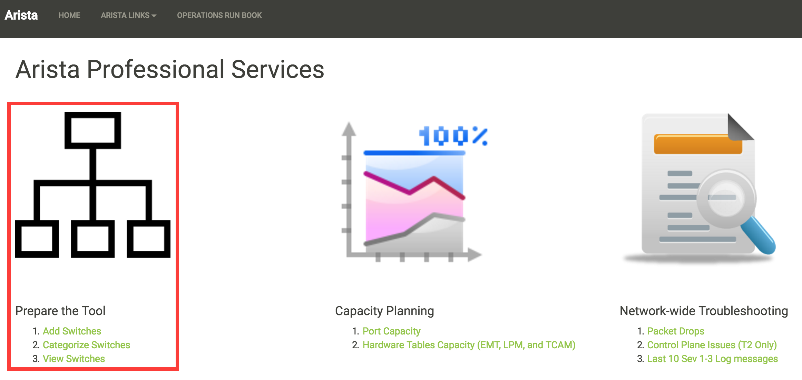
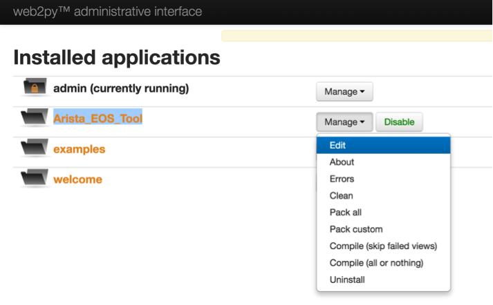
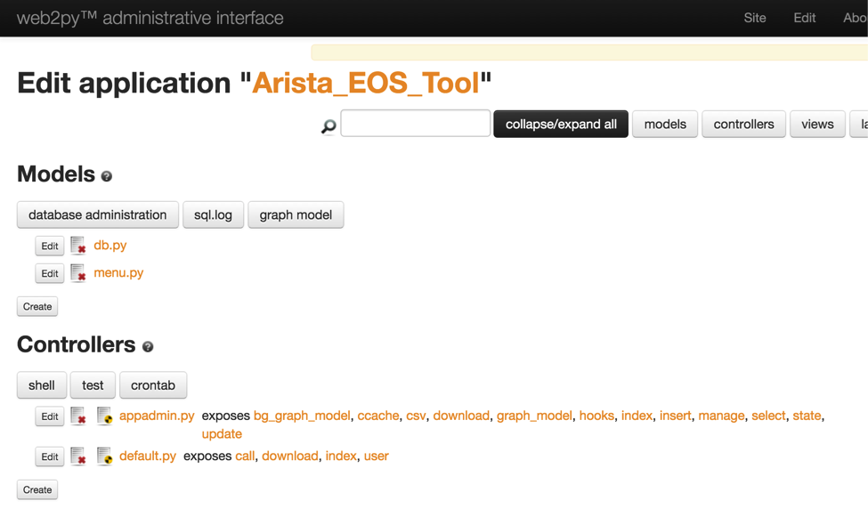
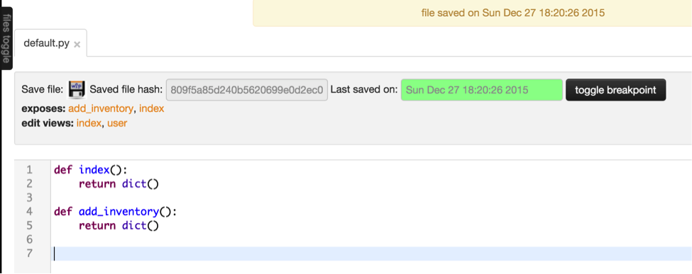
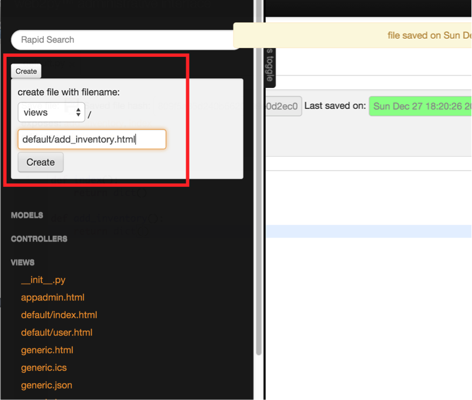
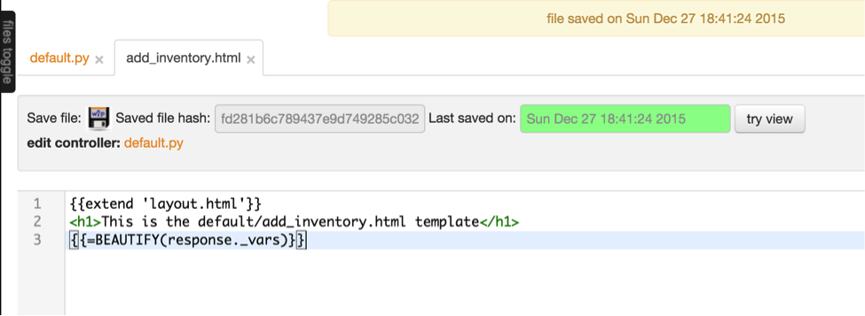
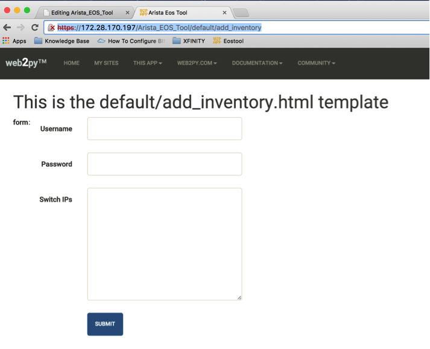
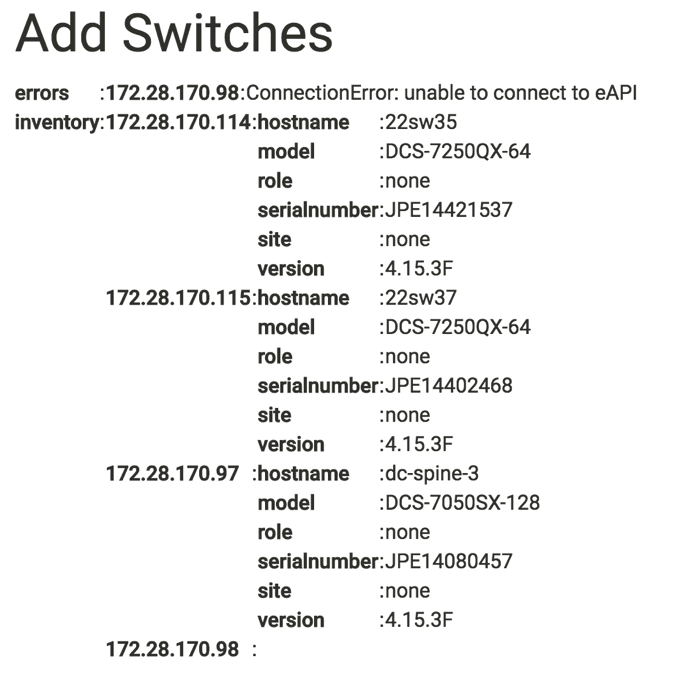

Chapter 8: Web2Py - Prepare the Tool¶
In this chapter, we will create functions and views for the tasks in the “Prepare the Tool” category. The purpose of these tasks in “Prepare the Tool” category is to provide an option to add the switches in the network manually and maintain the inventory. We will also provide an option to let the users to categorize the switches based on the location and role. Once the users added the switches in the tool, then they can run any operational tasks against those switches. The user will be able to run the tasks on all the switches or on the switches that belong to a specific site and/or on the switches with a specific role.
We are going to create three tasks (Add Switches, Categorize Switches and View Switches) in this section. Each task will have one or more functions in the default controller and a corresponding view (.html file).
Add Switches¶
“Add Switches” task allows the users to manually add the IP address of the switches into the tool. The tool is going to present a form to the end users where they can enter username, password and the IP address of the switches. Then the task is going to collect some of the basic information about the switches using pyeapi. Finally the task will store the inventory of these switches locally in the server. The task will not save the username and the password anywhere in the server.
We are going to write a function add_inventory in the default controller of our application. Since this will be our first program using web2py, we are going to spend more time in understanding how web2py works. First we will write an algorithm for this task.
Algorithm¶
We are going to collect the information and report it in the following format.
Inventory = {“<switch_IP_Address>”: {“Hostname”: “<switch_host_name>”,
“Model”: “<switch_model>”,
“Version”: “<switch_EOS_Version>”,
“Serial Number”: “<Serial_Number>”,
“Site”: “none”,
“Role”: “none”
}
}
The following Arista EOS commands are used to collect the above information.
23sw35#show hostname | json
{
"fqdn": "23sw35",
"hostname": "23sw35"
}
23sw35#show version | json
{
"modelName": "DCS-7250QX-64-F",
"internalVersion": "4.15.5M-3054042.4155M",
"systemMacAddress": "00:1c:73:5d:13:e9",
"serialNumber": "JPE14300059",
"memTotal": 8069500,
"bootupTimestamp": 1467299199.33,
"memFree": 4438208,
"version": "4.15.5M",
"architecture": "i386",
"internalBuildId": "43b3ce87-6eeb-48ce-bd2a-48e98def005a",
"hardwareRevision": "01.03"
}
Once we collect the data in a dictionary, it is easy to display the content of the dictionary from the view and store it in a file in .json format locally in the server.
- Create a New Function and a View for this task “Add Switches”
- Display a form to input username, password and IP address of the switches.
- Collect the inventory from the switches using pyeapi and store it in a dictionary.
- Store the dictionary in a json file called inventory.json. Save this file in the /home/www-data/web2py/applications/Arista_EOS_Tool/databases folder.
Develop Script¶
Step 1: Create a New Function and a View for this task “Add Switches”¶
Go to admin interface using the url https://<web-server>/admin/default/index
Arista_EOS_Tool: Manage –> Edit
Controllers: default.py –> Edit
Create a new function add_inventory()
Create a View for the function add_inventory
Click the “files toggle” on the top left
Click Create and select views from the drop down window
provide the file name with path –> default/add_inventory.html
We are going to keep the default content inside the view. Save this file.
You can verify the new function using the URL https://<web-server>/Arista_EOS_Tool/default/add_inventory. Since the function add_inventory is blank and it returns empty dictionary to the view. The view shows the default layout which shows the default web2py menu bar in the top of the screen and the title “This is the default/add_inventory.html template”.
Step 2: Display a form to receive input for username, password and IP addresses¶
There are few different ways to build forms in web2py. We are going to create a form using web2py’s SQLFORM.factory. We will define a form using SQLFORM.factory and assign it to a variable called form. Then we will return this variable to view using “return dict(form=form)”.
As you can see, there are three fields defined for our form. The first string inside each Field() entry is the name of the variable in which the values the user enters will be stored. This should be unique within the form. Rest of the strings within the Field() are optional.
Edit the add_inventory function in the default controller.
def add_inventory():
form = SQLFORM.factory(
Field('username', requires=IS_NOT_EMPTY()),
Field('password', 'password', requires=IS_NOT_EMPTY()),
Field('switchip', 'text', label="Switch IPs"))
return dict(form=form)
We don’t have to update the view since we are going to display all variables from the function using the statement “{{=BEAUTIFY(response._vars)}}”. We are going to discuss more about views in chapter 11.
Verify the updated function using the same URL https://<web-server>/Arista_EOS_Tool/default/add_inventory.
As you can see the field for switches is larger than for username and password. This is because we declared this field as ‘text’ when we define the form. Similarly, when you enter the field for password, it won’t display the content of the password. This is because we declare this field as “password” when we define the form.
You can change the display of the field different than the variable name by using label. You can define the fields as mandatory using requires=IS_NOT_EMPTY().
You can refer the “Forms and validators” chapter in the web2py documentation to learn more about web2py forms.
Step 3: Collect inventory and store it in a dictionary¶
Once the user enters the username, password, IP addresses and submit the form, the script should initiate the pyeapi call and collect the inventory from the switches. The inventory will be stored in a dictionary and displayed to the end user by returning the dictionary to the view.
First we will understand how to accept the values of the form variables from the default controller. So let us update our add_inventory() function to display the value of the IP addresses after the user clicks the submit button.
def add_inventory():
# Display form to input Username, Password and Switch IP addresses
form = SQLFORM.factory(
Field('username', requires=IS_NOT_EMPTY()),
Field('password', 'password', requires=IS_NOT_EMPTY()),
Field('switchip', 'text', label="Switch IPs"))
# if the form is accepted, collect the information from the switches
if form.process().accepted:
# Initiate inventory with blank dictionary
inventory = {}
# Since switch IPs are input as text with multiple IPs one per line,
# We will convert the text into List with the list of switch IP addresses
switchip_list = form.vars.switchip.split("\n")
# For each IP in the list switchip_List, collect the inventory
for each_switch_ip in switchip_list:
# For each switch IP, create empty directory with key as switch IP
inventory[each_switch_ip.strip()] = {}
# Return the inventory to View
return dict(inventory=inventory)
# Initially form will be returned to the view.
return dict(form=form)
Save the default.py and verify your script using the URL https://<web-server>/Arista_EOS_Tool/default/add_inventory. Before that let us update the view (add_inventory.html) to display the title as “Add Switches”.
{{extend 'layout.html'}}
<h1>Add Switches</h1>
{{=BEAUTIFY(response._vars)}}
When you enter https://<web-server>/Arista_EOS_Tool/default/add_inventory, add_inventory() function executes. First, the form variable is assigned with the fields defined using SQLFORM.factory() method. When it executes “if form.process().accepted:”” statement, it bypasses the if clause since the form has not been submitted yet. Then the last statement of the add_inventory() function returns the form variable to the view add_inventory.html.
Once you enter the username, password, switch IPs and submit, “if form.process().accepted:” clause is executed. Since we define the variable inventory and return this dictionary to the view within the “if form.process().accepted:” clause, we are seeing the content of the dictionary “inventory” on the web page. The values of the form fields are assigned internally by form.vars.<variable_name_defined_in_the_field> (for example form.vars.username, form.vars.password and form.vars.switchip).
Now we understand how to use web2py forms and display data using view, let us update the add_inventory() function to collect the inventory of the switches and store it in the dictionary.
import pyeapi
# Default Index for Home page of this tool
def index():
return dict()
# Prepare the Tool: Add Switches
def add_inventory():
# Display form to input Username, Password and Switch IP addresses
form = SQLFORM.factory(
Field('username', requires=IS_NOT_EMPTY()),
Field('password', 'password', requires=IS_NOT_EMPTY()),
Field('switchip', 'text', label="Switch IPs"))
# if the form is accepted, collect the information from the switches
if form.process().accepted:
# Initiate inventory & error with blank dictionary
inventory = {}
errors = {}
# Convert Switch IPs field from string to list
switchip_list = form.vars.switchip.split("\n")
# For each IP in the List switchip_List, apply your logic
for each_switch_ip in switchip_list:
# For each switch IP, create empty directory with key as switch IP
inventory[each_switch_ip.strip()] = {}
# Connect to Switches and Collect Inventory
try:
node = pyeapi.connect(transport='https', host=each_switch_ip.strip(), username=form.vars.username, password=form.vars.password, port=None)
# Collect the inventory
show_hostname = node.execute(["show hostname"])
hostname = str(show_hostname["result"][0]["hostname"])
show_inventory = node.execute(["show inventory"])
model = str(show_inventory["result"][0]["systemInformation"]["name"])
show_version = node.execute(["show version"])
version = str(show_version["result"][0]["version"])
serialnumber = str(show_version["result"][0]["serialNumber"])
# Save the collected data in the inventory dictionary
inventory[each_switch_ip.strip()] = {"hostname": hostname, "model": model, "serialnumber": serialnumber, "version": version, "site": "none", "role": "none"}
except pyeapi.eapilib.ConnectionError:
errors[each_switch_ip.strip()] = "ConnectionError: unable to connect to eAPI"
except pyeapi.eapilib.CommandError:
errors[each_switch_ip.strip()] = "CommandError: Check your EOS command syntax"
# Return the inventory to View
return dict(errors=errors, inventory=inventory)
# Return form to view.
return dict(form=form)
Save the config and verify the result.
Step 4: Store the dictionary into a JSON file¶
Store the dictionary in JSON format and save under the folder /home/www-data/web2py/applications/Arista_EOS_Tool/databases/. The reason for storing the data in a file is that we will reuse this data (Switch IP addresses, site and role) by all the uses cases created in this tool.
First create a blank inventory.json file in the server.
anees@ubuntu-web2py:~$ cd /home/www-data/web2py/applications/Arista_EOS_Tool/databases/
anees@ubuntu-web2py:/home/www-data/web2py/applications/Arista_EOS_Tool/databases$ sudo sh -c "echo {} > inventory.json"
anees@ubuntu-web2py:/home/www-data/web2py/applications/Arista_EOS_Tool/databases$ sudo chown -R www-data:www-data inventory.json
Update the script to store the content of the dictionary (inventory) into this file.
import pyeapi
import json
# Define inventory file
file_path = "/home/www-data/web2py/applications/Arista_EOS_Tool/databases/"
file_inventory = "inventory.json"
file = file_path + file_inventory
# Default Index for Home page of this tool
def index():
return dict()
# Prepare the Tool: Add Switches
def add_inventory():
# Display form to input Username, Password and Switch IP addresses
form = SQLFORM.factory(
Field('username', requires=IS_NOT_EMPTY()),
Field('password', 'password', requires=IS_NOT_EMPTY()),
Field('switchip', 'text', label="Switch IPs"))
# if the form is accepted, collect the information from the switches
if form.process().accepted:
# Initiate inventory & error with blank dictionary
inventory = {}
errors = {}
# Convert Switch IPs field from string to list
switchip_list = form.vars.switchip.split("\n")
# For each IP in the List switchip_List, apply your logic
for each_switch_ip in switchip_list:
# For each switch IP, create empty directory with key as switch IP
inventory[each_switch_ip.strip()] = {}
# Connect to Switches and Collect Inventory
try:
node = pyeapi.connect(transport='https', host=each_switch_ip.strip(), username=form.vars.username, password=form.vars.password, port=None)
# Collect the inventory
show_hostname = node.execute(["show hostname"])
hostname = str(show_hostname["result"][0]["hostname"])
show_inventory = node.execute(["show inventory"])
model = str(show_inventory["result"][0]["systemInformation"]["name"])
show_version = node.execute(["show version"])
version = str(show_version["result"][0]["version"])
serialnumber = str(show_version["result"][0]["serialNumber"])
# Save the collected data in the inventory dictionary
inventory[each_switch_ip.strip()] = {"hostname": hostname, "model": model, "serialnumber": serialnumber, "version": version, "site": "none", "role": "none"}
except pyeapi.eapilib.ConnectionError:
errors[each_switch_ip.strip()] = "ConnectionError: unable to connect to eAPI"
except pyeapi.eapilib.CommandError:
errors[each_switch_ip.strip()] = "CommandError: Check your EOS command syntax"
# Store the dictionary "inventory" in the json file
with open(file) as readfile:
current_inventory = json.load(readfile)
current_inventory.update(inventory)
with open(file, 'w') as writefile:
json.dump(current_inventory, writefile)
# Return the inventory to View
return dict(errors=errors, inventory=inventory)
# Return form to view.
return dict(form=form)
Verify your script using the URL https://<web-server>/Arista_EOS_Tool/default/add_inventory. The result will be displayed on the web page as before. You can also check the content of the inventory.json from the ubuntu server.
anees@ubuntu-web2py:~$ cd /home/www-data/web2py/applications/Arista_EOS_Tool/databases/
anees@ubuntu-web2py:/home/www-data/web2py/applications/Arista_EOS_Tool/databases$ cat inventory.json
{"172.28.170.98": {"serialnumber": "JPE14080459", "hostname": "22sw4", "site": "none", "version": "4.15.3F", "role": "none", "model": "DCS-7050SX-128"}, "172.28.170.97": {"serialnumber": "JPE14080457", "hostname": "22sw2", "site": "none", "version": "4.15.3F", "role": "none", "model": "DCS-7050SX-128"}, "172.28.170.114": {"serialnumber": "JPE14421537", "hostname": "22sw35", "site": "none", "version": "4.15.3F", "role": "none", "model": "DCS-7250QX-64"}, "172.28.170.115": {"serialnumber": "JPE14402468", "hostname": "22sw37", "site": "none", "version": "4.15.3F", "role": "none", "model": "DCS-7250QX-64"}}anees@ubuntu-web2py:/home/www-data/web2py/applications/Arista_EOS_Tool/databases$